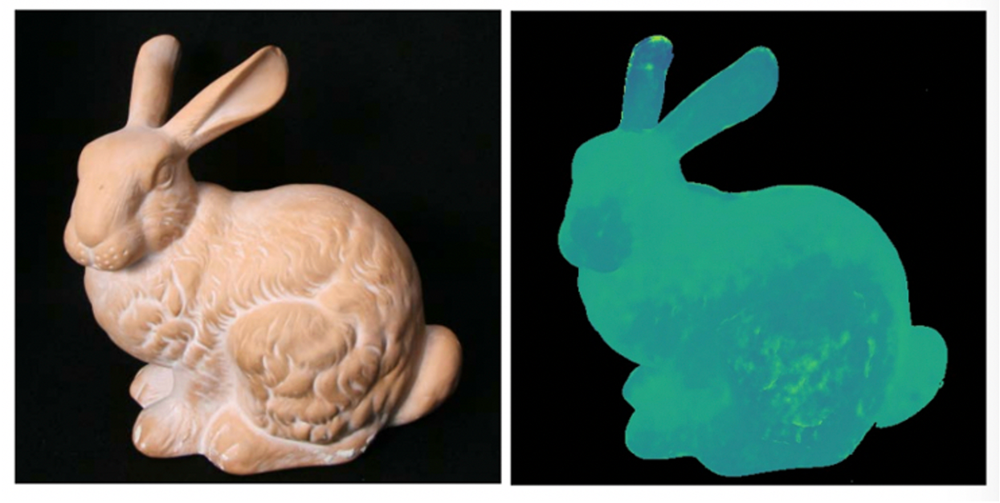
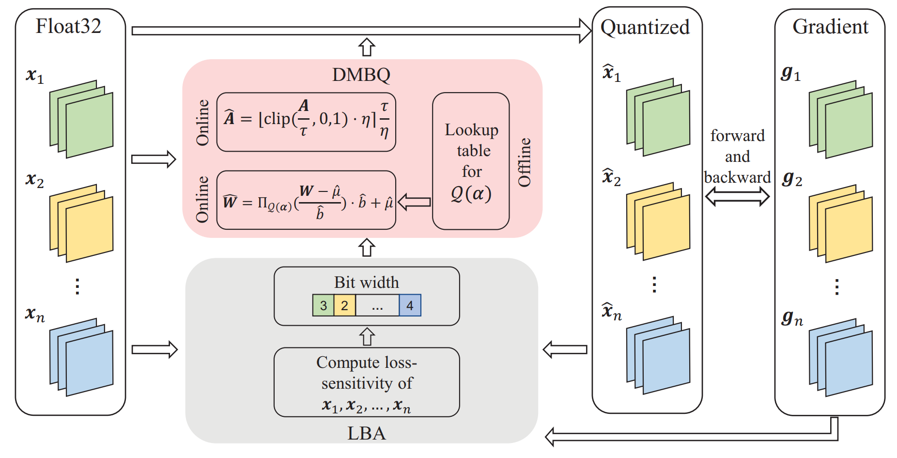
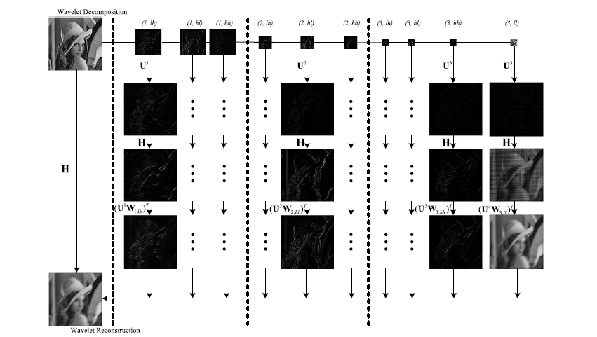

PUBLICATIONS
-

Inspired by the optical structure of their eyes, we demonstrate a nanophotonic light-field camera incorporating a spin-multiplexed bifocal metalens array capable of capturing high-resolution light-field images over a record depth-of-field ranging from centimeter to kilometer scale, simultaneously enabling macro and telephoto modes in a snapshot imaging.
-
In this paper, a restricted isometry property (RIP) condition based error clamping is proposed, which could directly predict the reconstruction error, i.e. the difference between the currently-stage reconstructed image and the ground truth image, and adaptively allocate samples to different regions at the successive sampling stage.
-

In this paper, we propose a Fisher-information guided framework to jointly optimize the coding functions (light modulation and sensor demodulation functions) and the reconstruction network of iToF imaging, with the supervision of the proposed discriminative fisher loss..
-

Light field images contain both angular and spatial information of captured light rays. The rich information of light fields enables straightforward disparity recovery capability but demands high computational cost as well. In this paper, we design a lightweight disparity estimation model with physical-based multi-disparity-scale cost volume aggregation for fast disparity estimation.
-

Existing rain image editing methods focus on either removing rain from rain images or rendering rain on rain-free images. This paper proposes to realize continuous control of rain intensity bidirectionally, from clear rain-free to downpour image with a single rain image as input, without changing the scene-specific characteristics, e.g. the direction, appearance and distribution of rain.
-

In this paper, we explore the compression of deep neural networks by quantizing the weights and activations into multi-bit binary networks (MBNs). A distribution-aware multi-bit quantization (DMBQ) method that incorporates the distribution prior into the optimization of quantization is proposed.
-
In this paper, we propose a novel kind of time delay integration (TDI) image sensor based on single photon avalanche diode (SPAD), i.e. TDI-SPAD. Compared with existing TDI imaging devices, the proposed TDI-SPAD sensor is characterized by low noise, high sensitivity, high modulation transfer function (MTF) and transfer efficiency.
-
This paper investigates the impact of incident beam inhomogeneity on the quality of THz imaging based on the compressed sensing (CS) method.
-
In this paper, we explore the physical origins of the practical high sensitivity noise in digital cameras, model them mathematically, and propose to enhance the low light videos based on the noise model by using an LSTM-based neural network.
-
This paper proposes a novel multispectral video acquisition method for dynamic scenes by using the Spectral-Sweep camera. To fully utilize the redundancies of multispectral videos in the spatial, temporal and spectral dimensions, we propose a Complex Optical Flow (COF) method that could extract the spatial and spectral signal variations between adjacent spectral-sweep frames.
-
Line-scanning temporal focusing microscopy is competitive in high imaging speed but still suffers from tissue scattering. We propose the extended detection and computational reconstruction technique, to extract signals from scattering photons and enhance imaging depths.
-
In contrast to the spatial filtering based on confocal slit detection, here we propose the extended detection LTFM (ED-LTFM), the first wide-field two-photon imaging technique to extract signals from scattered photons and thus effectively extend the imaging depth.
-
In this paper, we propose a video rate spectroscopy via Fourier-spectral-multiplexing (FSM-VRS) which exploits both spectral and spatial sparsity.
-
Inspired by the fact that natural scenes exhibit unique degenerated structures in the low-dimensional subspace, we propose to take advantage of such local prior via convolutional sparse coding to implement high fidelity SPI.
-
In this paper, based on a simple but not widely noticed phenomenon that the color printer can print color masks with a large number of independent spectral transmission responses, we propose a simple and low-budget scheme to capture the hyperspectral images with a random mask printed by the consumer-level color printer.
-
Through investigating the dispersive blur caused by spectral dispersers and introducing the difference of blur (DoB) constraints, we propose a basic theory for capturing multispectral information from a single dispersive-blurred image and an additional spectrum of an arbitrary point in the scene.
-
In this paper, we propose a snapshot hyperspectral imaging technique which exploits both spectral and spatial sparsity of natural scenes.
-
In this work, we introduce a new approach to RGB+NIR image reconstruction using learned convolutional sparse priors.
-
This paper reviews the context of such cameras in the developing field of computational imaging and discusses how parallel architectures impact optical and electronic processing design.
-
This paper proposes a novel method to capture the spectral and light field information simultaneously. By using a delicately designed chromatic aberration enlarged camera, the spectral-varying slices at different depths of the scene can be easily captured.
-
In this paper, inspired by anaglyph theory (i.e. the ability of human eyes to synthesize colored stereo perception from color-complementary (such as red and cyan) views), we propose to capture the multispectral light field using multiple cameras with different wide band filters.
-

This paper presents a novel nonuniform deblurring approach, which defines the blur model and calculates regularized nonuniform deconvolution in the wavelet domain to achieve high efficiency and high accuracy.
-
This article presents an overview of these state-of-the-art multispectral acquisition systems, with a particular focus on snapshot multispectral capture, from a signal processing perspective.
-
In this paper, we analyze fundamental resolution limits of light field cameras in the diffraction limit. We propose a sequential, coded-aperture-style acquisition scheme that optimizes the resolution of a light field reconstructed from multiple photographs captured from different perspectives and f-number settings.
-

It has been demonstrated that nature images are spatiotemporally redundant and the redundancy is scene dependent. Inspired by that, we propose a content-adaptive computational ghost imaging approach
MORE -
In contrast to previous solutions using hardware compensation or precalibration, we propose a computational approach for blind aberration removal from a single image, by exploring various geometric
MORE -
Non-uniform camera shake removal is a knotty problem which plagues the researchers due to the huge computational cost of high-dimensional blur kernel estimation. To address this problem, we propose
MORE -
Inspired by the fact that the natural image patches usually exhibit simple structures, and these structures share common primitives, we propose a patch-primitive driven reconstruction approach to rai
MORE -
We develop a Gerchberg-Saxton-like technique for GI image reconstruction in this manuscript.
MORE -
Ultrafast sources and detectors have been used to record the time-resolved scattering of light propagating through macroscopic scenes. Here, we demonstrate a method of convolutional sparse coding to
MORE
© 2021 Nanjing University COMPUTATION IMAGING. ALL RIGHTS RESERVED.
- 取消